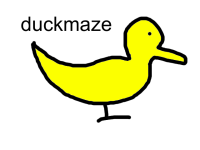
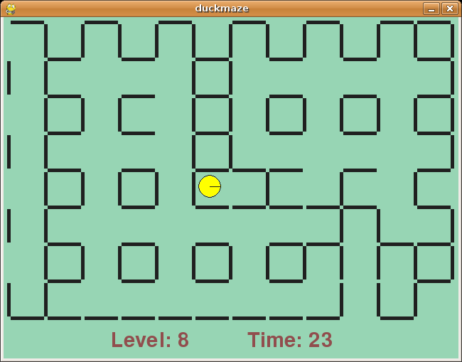

duckmaze is a game about a duck that is in a maze. The duck can move walls, but only if there are no walls in the way (it makes sense when you try it).
It's a simple puzzle game which starts with easy levels but progresses to some quite tricky ones.
The game includes a full level editor, so feel free to create your own and send them in!
NOTE: At the moment, duckmaze has no sound effects or music. This will be fixed soon!

To run duckmaze, you will need to install Python and the PyGame library. On Linux this should be a simple case of apt-get install python-pygame or yum install pygame or similar.
On Windows, you will need to download the relevant installers and install them.
If you want to run duckmaze on a Windows PC (i.e. a normal computer), download the file duckmaze-pc-XXX.zip from the Sourceforge download area, and unzip it.
Double-click on duckmaze.py and hopefully the game will run. If you have problems, open a DOS or Cmd window, cd into the directory where you unzipped duckmaze, and type python duckmaze.py
Download the file duckmaze-pc-XXX.zip from the Sourceforge download area, and unzip it.
cd to the directory where you unzipped the file, and type ./duckmaze.py. Alternatively, try python duckmaze.py
If you have the excellent GP2X handheld games console, first you need to make sure you have Python and the PyGame library installed. The easiest way to get these is to download both of them as a single zip file. There is a known-working version on the mop(e)snake download page: pygame_gp2x but there may be more recent versions linked from here: http://wiki.gp2x.org/wiki/Pygame. You should unzip the file and copy the "python" directory over to the root directory of your GP2X's sd card.
Now download the file duckmaze-gp2x-XXX.zip from the Sourceforge download area and unzip it on your PC, before copying the unzipped directory across to your GP2X. You should now be able to choose "Games" in the GP2X menu, navigate to the directory you copied over, and start the game by choosing "duckmaze".
Press any key to start, and use the arrow keys to control the duck. Try to get out of the maze, and don't forget you can move walls, but only if there is not another wall in the way!
You can also use the good old fashioned O, P, Q, A key layout you remember from your ZX Spectrum days. You can also redefine the keys by modifying the config file in ~/.duckmaze/config. Figuring out the format of that file is left as an exercise for the reader.
Press ESCAPE on the title screen to enter the menu, which allows you to change the level you start at (once you have unlocked them) and turn the music and sound effects on or off. You can also go to the level editor from this menu (see later). Press ESCAPE during the game to pause or quit.
Press any button to start, and use the joystick and/or the A, B, X and Y buttons to control the duck. Try to get out of the maze, and don't forget you can move walls, but only if there is not another wall in the way!
Press START on the title screen to enter the menu, which allows you to change the level you start at (once you have unlocked them) and turn the music and sound effects on or off. You can also go to the level editor from this menu (see later). Press START during the game to pause or quit.
Press ESCAPE and choose 'Level editor' from the menu. You can either create a new level, or load one you have already created.
Once you have created or loaded a level, you will see the level, and your cursor to add or remove walls. Move the cursor using the mouse or the arrow keys, and left-click (or press RETURN) to add or remove a wall, and right-click (or press SPACE) to move the start position of the duck.
When you are happy with your level, press ESCAPE to display the menu and choose 'Save level'. You can choose to save it as a new custom level, or overwrite one you saved before.
Please send in your level designs to duckmaze-devel at lists dot sourceforge dot net. It would be great to see them, and if they're tricky and/or interesting enough, they will appear in the next release!
NOTE: At the moment, there is no easy way to play the levels you create. They are saved in the levels directory inside the duckmaze directory, and to play them you must rename them from 'custom_xxx' to 'level_xxx'. When you have done that, they will become part of the normal game. This will be fixed in a future version, so that you can play custom levels directly.
Press START and choose 'Level editor' from the menu. You can either create a new level, or load one you have already created.
One you have created or loaded a level, you will see the level, and your cursor to add or remove walls. Move the cursor using joystick, and press B to add or remove a wall, and A to move the start position of the duck.
When you are happy with your level, press START to display the menu and choose 'Save level'. You can choose to save it as a new custom level, or overwrite one you saved before.
Please send in your level designs to duckmaze-devel at lists dot sourceforge dot net. It would be great to see them, and if they're tricky and/or interesting enough, they will appear in the next release!
NOTE: At the moment, there is no easy way to play the levels you create. They are saved in the levels directory inside the duckmaze directory, and to play them you must rename them from 'custom_xxx' to 'level_xxx'. When you have done that, they will become part of the normal game. This will be fixed in a future version, so that you can play custom levels directly.
duckmaze is written in Python, using the PyGame library, which is a convenient wrapper on the SDL libraries.
duckmaze's source code is stored in an SVN repository. Make sure you have the SVN command-line client (should be already installed on most Linux distros, but will need to be installed on Windows), and type:
svn co https://duckmaze.svn.sourceforge.net/svnroot/duckmaze/trunk duckmaze
To run, type:
cd duckmaze
./duckmaze.py
On Windows, the last line should be:
python duckmaze.py
Patches, suggestions and comments welcome! Send them to our developers' mailing list.
If you're interested in what's planned for the future, check out the TODO list.
My homepage can be found at www.artificialworlds.net. My name, by the way, is Andy Balaam.
You can contact the developers of duckmaze by emailing duckmaze-devel at lists dot sourceforge dot net. The list archives may also be useful.
duckmaze is Copyright (C) 2006-2007 by Andy Balaam.
duckmaze is free software; you can redistribute it and/or modify it under the terms of the GNU General Public License as published by the Free Software Foundation; either version 2 of the License, or (at your option) any later version. This licence is contained in the file COPYING.txt.
This program is distributed in the hope that it will be useful, but WITHOUT ANY WARRANTY; without even the implied warranty of MERCHANTABILITY or FITNESS FOR A PARTICULAR PURPOSE. See the GNU General Public License for more details.
You should have received a copy of the GNU General Public License along with this program; if not, write to the Free Software Foundation, Inc., 59 Temple Place, Suite 330, Boston, MA 02111-1307 US